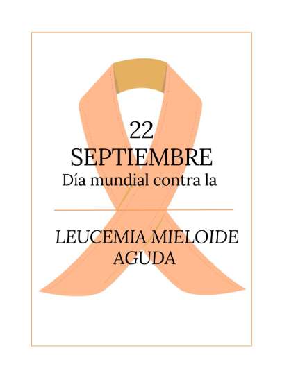

Son cánceres que se origina en las células que normalmente madurarían hacia los diferentes tipos de células sanguíneas. Con más frecuencia, la leucemia se origina en formas tempranas de glóbulos blancos, pero algunas leucemias comienzan en otros tipos de células sanguíneas. Existen varios tipos de leucemia que se dividen basándose principalmente en la leucemia es aguda (crecimiento acelerado) o crónica (crecimiento más lento), y si se inicia en células mieloides o células linfoides.
(American Cancer Society, 2018)
Este subtipo de leucemia porta una gran dificultad diagnostica desde el punto de vista morfológico, ya que los blastos presentan rasgos morfológicos linfoides y mieloides, este subtipo constituye únicamente el 5% de las LAM en el adulto (Merino, 2010, p. 140).
Este subtipo frecuentemente se observa un conformismo celular, con presencia en sangre periférica de blastos mieloides menor al 3% en ausencia de otras células en estadios siguientes al mieloblasto, la morfología de los blastos es de tamaño mediano, elevada relación nucleocitoplasmática, cuenta con un contorno nuclear redondeado, núcleo de cromatina laxa e inmadura con presencia de uno o varios nucleolos prominentes (Merino, 2010, p. 140)
Este subtipo representa el 30% de todos los casos de LAM y muestra células en estadios madurativos posteriores al mieloblasto en un porcentaje superior al 10%. el tamaño de los blastos es pequeño a medianos, con una elevada relación nucleocitoplasmática y un perfil nuclear redondeado, que en algunos casos adopta una posición cuadrangular con respecto al citoplasma, el núcleo muestra una cromatina laxa e inmadura, con uno o varios nucleolos visibles, de citoplasma basófilo y puede o no contener esbozos de granulación primaria azurófila o en su lugar rara vez algún bastón de Auer (Merino, 2010, p. 141).
Este subtipo suele acompañarse de una cifra baja de leucocitos en sangre periférica, lo que dificulta su diagnóstico. Las células que mayormente proliferan muestran una morfología muy característica y se nombran premiercitos atípicos o hipergranulares, ocasionalmente puede cursar accidentes hemorrágicos de alta gravedad por coagulación intravascular diseminada, los premiercitos atípicos presentan una granulación potentemente azurófila y muy abundante. El núcleo normalmente suele ser de aspecto monocitoide y con perfil bilobulado con presencia de una hendidura amplia, o bien de perfil irregular, el citoplasma es mínimamente basófilo debido al elevado contenido de granulación azurófila. Algunos de los promielocitos atípicos contienen inclusiones citoplasmáticas cristalinas en forma de astillas (alargadas), específicas de este subtipo de leucemias, que normalmente suelen disponerse en cúmulos y que difieren de los bastones de Auer por la detección de una subestructura en forma de tubo cuando se estudian mediante microscopia electrónica de transmisión (Merino, 2010, p. 141).
Esta subclase se caracteriza por tener un componente monocítico y otro granulocítico, en diversas proporciones variables y con diversos grados de maduración, los blastos monocíticos son de un gran tamaño, de relación moderada núcleo- citoplasmática y de basófilas variables, el núcleo de este puede ser irregular normalmente en forma redondeado o arriñonado, los nucleolos suelen ser de tamaño prominente (Merino, 2010, p. 142).
Esta subclase constituye cerca de un 15% del total de las LAM, las células leucémicas son de estirpe monocítica esta subclase de LAM incluye 2 subtipos. (Subclasificación): LAM5a en esta leucemia aguda monoblástica predominan los monoblastos. LAM5b en esta leucemia aguda monocítica en la que se observan promonocitos y monocitos en misma cantidad y proporción elevada que los monoblastos. LAM5a (monocítica) este subtipo de LAM5 representa entre 5% y 8% de las LAM, los elementos blásticos son de un gran aspecto y tamaño, el núcleo presenta un perfil redondeado de cromatina laxa e inmadura de 1 a 3 nucleolos y con un citoplasma medianamente amplio y altamente basófilo, en el citoplasma se puede observar algún bastón de Auer y en conjunto o en su lugar prolongaciones o mamelones (Merino, 2010, p. 142). LAM5b (monocítica) Este subtipo de LAM5 representa entre un 3% y 6% de las LAM, en los promonocitos se observa un núcleo de perfil redondeado o en forma de riñón, con un citoplasma de menor basófila, con mayor contenido de granulación que los monoblastos y presencia de vacuolas dispersas (Merino, 2010, p. 142).
Esta subclase ha sido definida por la clasificación FAB (francesa-americana-británica) como “proliferación de elementos eritroides displásicos” esto en conjunto a una proliferación de elementos blásticos de origen mieloide, se han clasificados en dos subtipos: LAM6a mejor conocida como eritroleucemia, esta presenta una proliferación blástica mixta entre mieloide y eritroide. LAM6b esta variante o leucemia eritroide pura esto según la clasificación de la OMS. LAM6a (eritroleucemia) Este subtipo muestra una proliferación leucémica de modo mixto de las series eritroblástica y granulocítica, representa un 5%-6% de todos los casos de LAM, y existe la posibilidad de que sea un trastorno secundario a un síndrome mielodisplásico previo, para que sea diagnosticada se requiere de un 50% o más de precursores eritroides de la totalidad de las células y un 30% de mieloblastos de las células no eritroide (Merino, 2010, p. 143). LAM6b variante (leucemia eritroide pura) este tipo presenta más de un 80% de la celularidad de medula ósea esta constituida por elementos eritroides, mientras que los componentes mieloides son inferiores al 3%. este trastorno se asocia a alteraciones importantes de la morfología eritrocitaria en sangre periférica, como lo son macrocitosis, punteado basófilo, cuerpos de Howell-Jolly o anillos de Cabot (Merino, 2010, p. 143).
Representa un 3%-5% de las LAM, los blastos presentan una morfología inmadura y polimórfica, de núcleo excéntrico, de cromatina laxa y reticulada con 1 a 3 nucleolos de gran tamaño, citoplasma basófilo a granular y de aspecto similar a las plaquetas con presencia de mamelones.
(American Cancer Society, 2018)
(American Cancer Society, 2018)
(American Cancer Society, 2018)
(American Cancer Society, 2018)
La leucemia mieloide aguda se inicia en la médula ósea (la parte blanda del interior de ciertos huesos, donde se producen las nuevas células sanguíneas), pero con más frecuencia también pasa rápidamente a la sangre. Algunas veces se propaga a otras partes del cuerpo, incluyendo los ganglios linfáticos, el hígado, el bazo, el sistema nervioso central (el cerebro y la médula espinal) y los testículos.
(American Cancer Society, 2018)
Se produce un cambio genético en una versión temprana (inmadura) de células mieloides (las células que producen glóbulos rojos, plaquetas, y la mayoría de los tipos de glóbulos blancos (excepto linfocitos). Este cambio forma un gen anormal llamado BCR- ABL, que convierte la célula en una célula CML.
(American Cancer Society, 2018)